☰ Navigation

Saturn V - USA
What is the Saturn V?
Saturn V was an American human-rated super heavy-lift launch vehicle used by NASA between 1967 and 1973.
The three-stage liquid-propellant expendable rocket was developed to support the Apollo program for human exploration of the Moon.
It was then later used to launch Skylab, the first American space station.
Missions
| Mission Name | Crew | Date | Patch | Mission |
|---|---|---|---|---|
| Apollo 8 | Frank Borman, James Lovell, William Anders | 21/12/1968 | 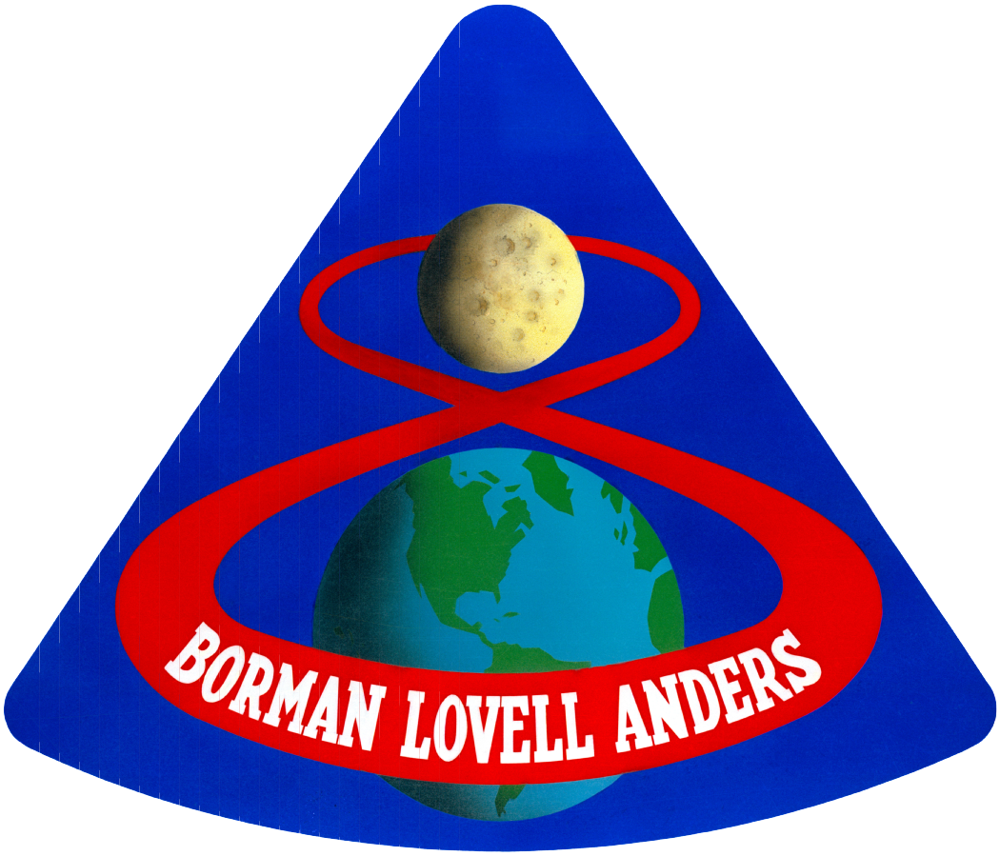 | First circumlunar flight of CSM, had ten lunar orbits in 20 hours. First crewed flight of Saturn V. |
| Apollo 9 | James McDivitt, David Scott, Rusty Schweickart | 03/03/1969 | 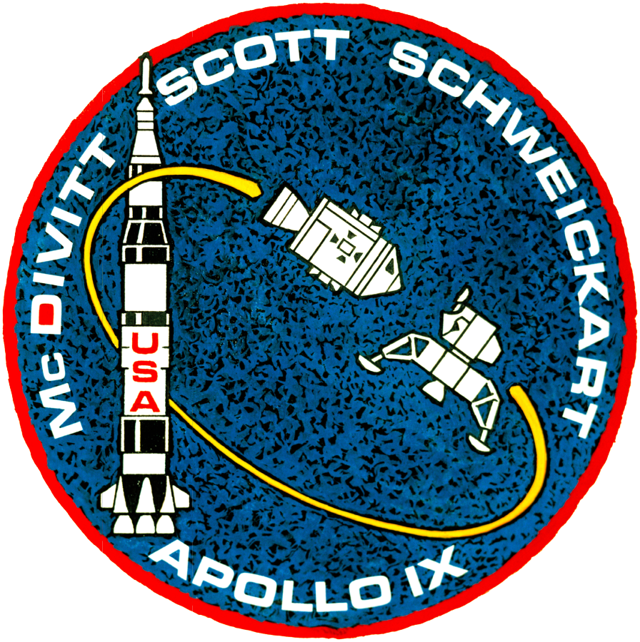 | First crewed flight test of Lunar Module; tested propulsion, rendezvous and docking. EVA tested the Portable Life Support System (PLSS). |
| Apollo 10 | Thomas P. Stafford, John Young, Eugene Cernan | 18/05/1969 | 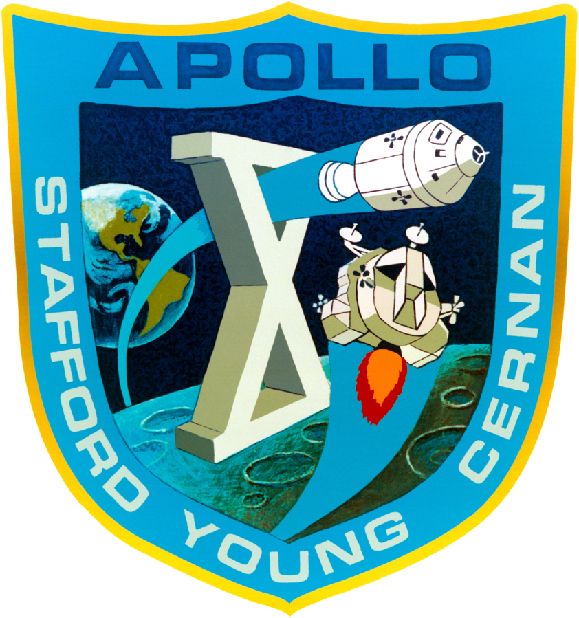 | "Dress rehearsal" for lunar landing. The LM descended to 8.4 nautical miles (15.6 km) from lunar surface. |
| Apollo 11 | Neil Armstrong, Michael Collins, Edwin "Buzz" Aldrin | 16/07/1969 | 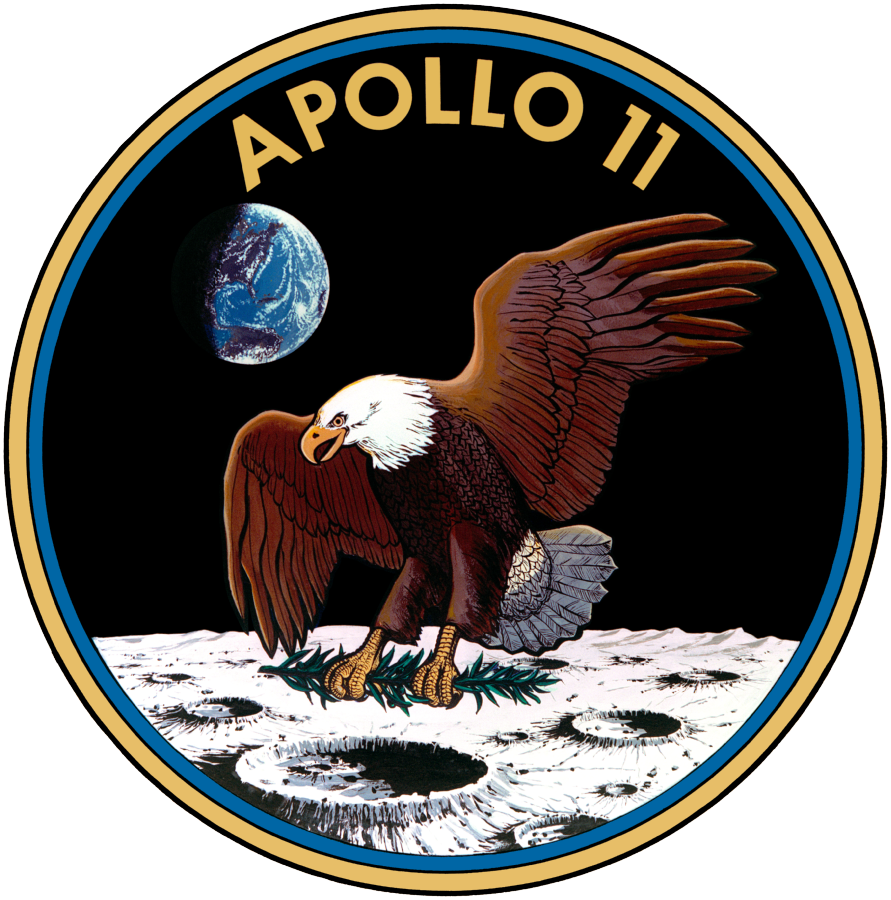 | First crewed landing in Sea of Tranquility; including a single surface EVA. |
| Apollo 12 | Charles (Pete) Conrad, Richard F. Gordon Jr., Alan Bean | 14/11/1969 | 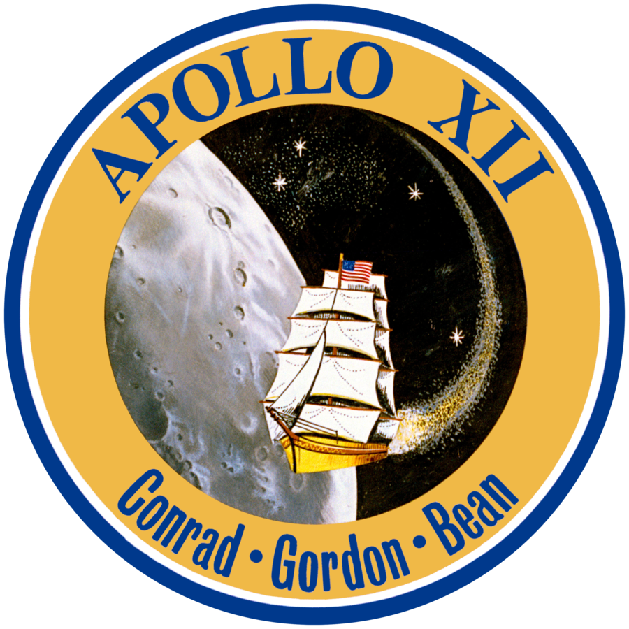 | First precise Moon landing in Ocean of Storms near Surveyor 3 probe. Two surface EVAs and returned parts of Surveyor to Earth. |
| Apollo 13 | James Lovell, Jack Swigert, Fred Haise | 11/04/1970 | 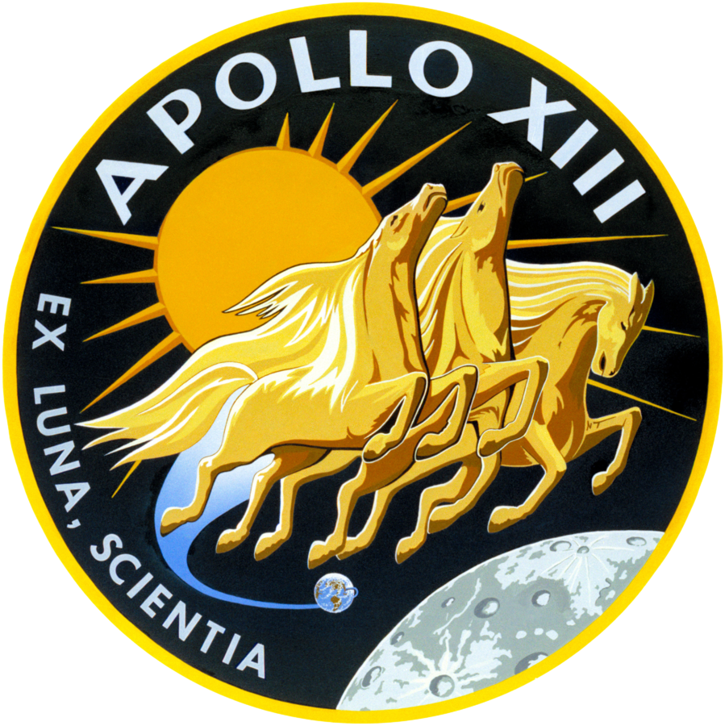 | Intended Fra Mauro landing cancelled after SM oxygen tank exploded. LM used as "lifeboat" for safe crew return. First S-IVB stage impact on Moon for active seismic test. (Moon landing aborted) |
| Apollo 14 | Alan Shepard, Stuart Roosa, Edgar Mitchell | 31/01/1971 | 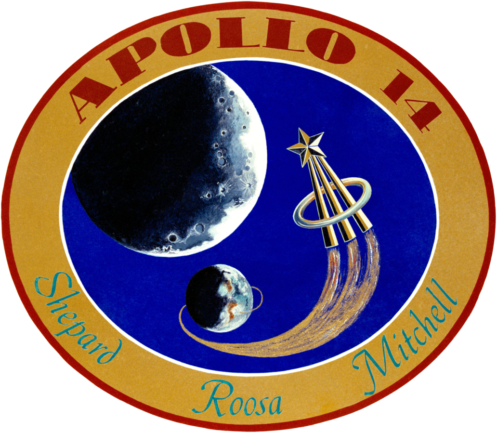 | Successful Fra Mauro landing. Broadcast first color TV images from lunar surface. Conducted first materials science experiments in space. Conducted two surface EVAs. |
| Apollo 15 | David Scott, Alfred Worden, James Irwin | 26/07/1971 | 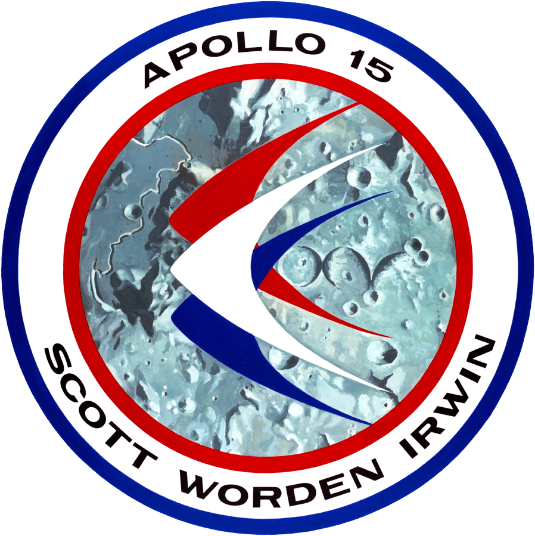 | Landing at Hadley–Apennine. First extended LM, three-day lunar stay. First use of Lunar Roving Vehicle. Conducted 3 lunar surface EVAs and one deep space EVA on return to retrieve orbital camera film from SM. |
| Apollo 16 | John Young, Ken Mattingly, Charles Duke | 16/04/1972 | 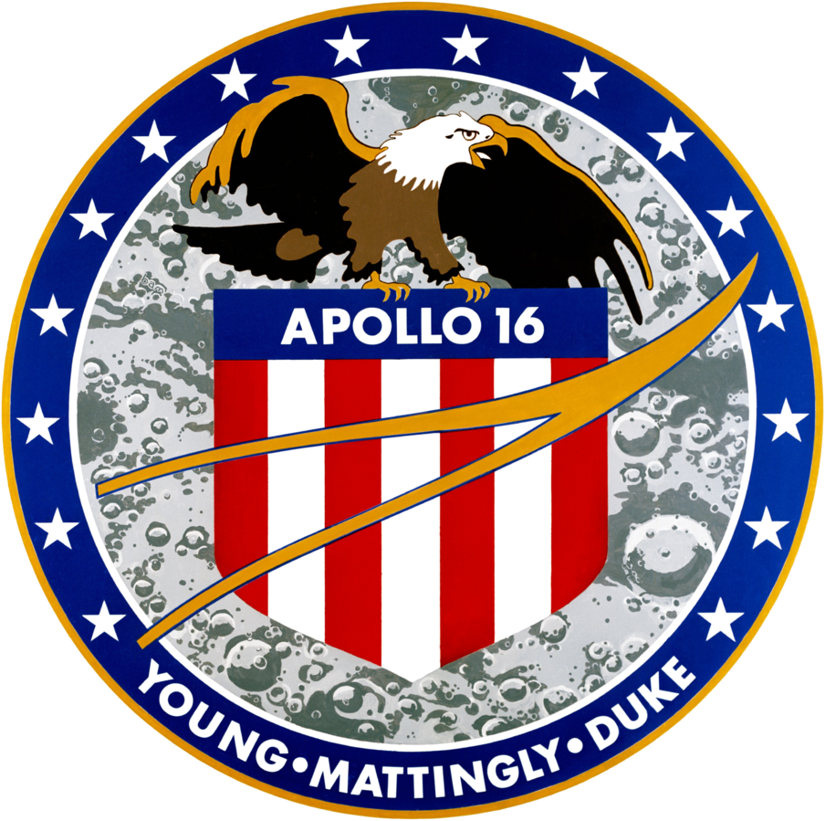 | Landing in Descartes Highlands. Conducted 3 lunar EVAs and one deep space EVA. |
| Apollo 17 | Gus Grissom, Ed White, Roger B. Chaffee | 07/12/1972 | 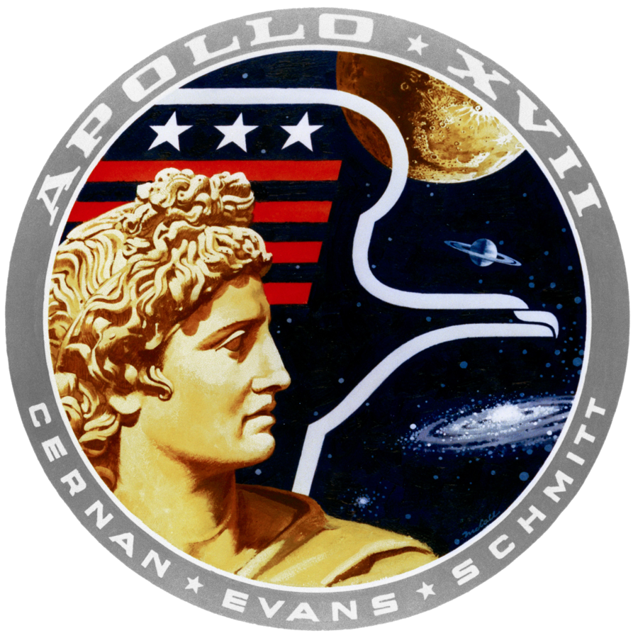 | Final Moon mission - Landing at Taurus–Littrow. First professional geologist on the Moon. First night launch. Conducted 3 lunar EVAs and one deep space EVA. |
| Skylab 1 | Unmanned | 14/05/1973 | 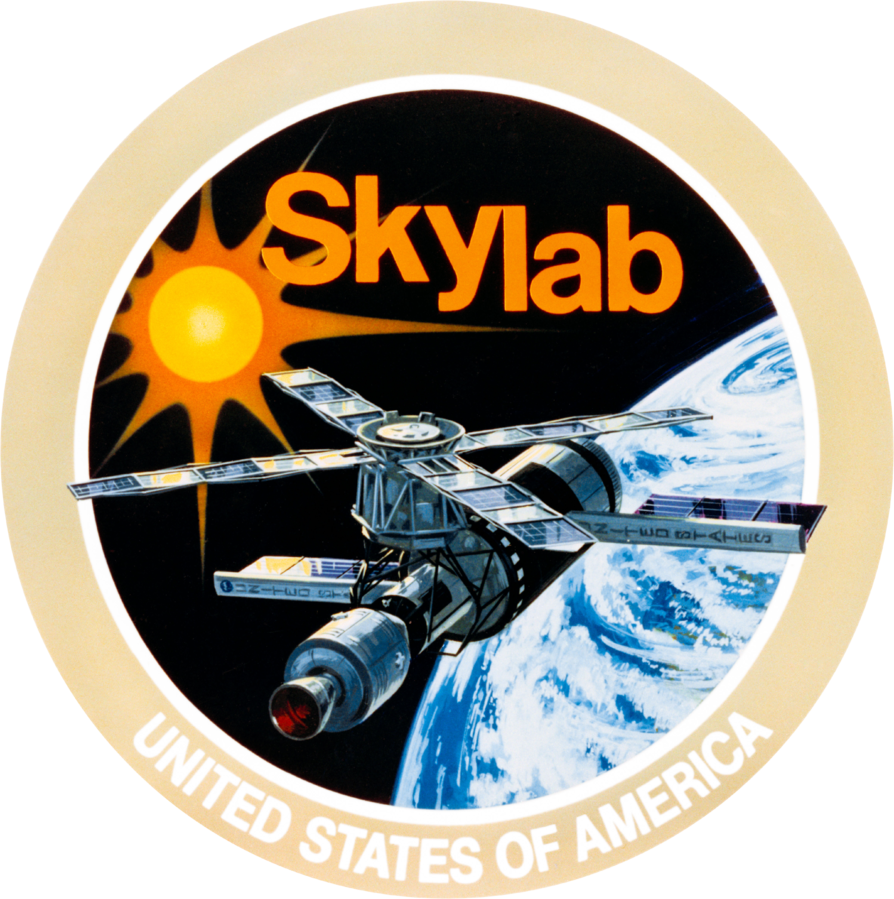 | Final flight of the Saturn V - Uncrewed launch of the Skylab space station. The space station was later crewed by missions Skylab 2, Skylab 3 and Skylab 4. |
How did it all work?
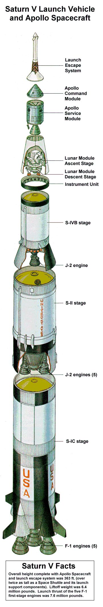Some facts about the Saturn V
- Saturn V’s first stage, powered by five large kerosene–liquid-oxygen engines and weighing more than 2,000,000 kg (4,400,000 pounds) fully fueled.
- It lifted itself, the second and third stages, and the spacecraft to a speed of 8,700 km (5,400 miles) per hour and to a point about 60 km (40 miles) above Earth.
- The first stage was then jettisoned, and the second stage, powered by five smaller liquid-hydrogen–liquid-oxygen engines and weighing more than 450,000 kg (1,000,000 pounds)
- They then took over, increasing speed to more than 22,000 km (nearly 14,000 miles) per hour.
- At a point about 190 km (120 miles) above Earth, the second stage was jettisoned, and the liquid-fuel single-engine third stage ignited for about 2.5 minutes to accelerate the spacecraft to 27,400 km (17,000 miles) per hour.
- This put it into a temporary parking orbit around Earth.
- The astronauts then reignited the third-stage engine, which burned for another 51/2 minutes, cutting off at an altitude of about 300 km (190 miles) and a speed of about 40,000 km (25,000 miles) per hour, the velocity needed to escape Earth’s gravity
- Hours afterward the third stage was jettisoned while the spacecraft traveled on toward the Moon.